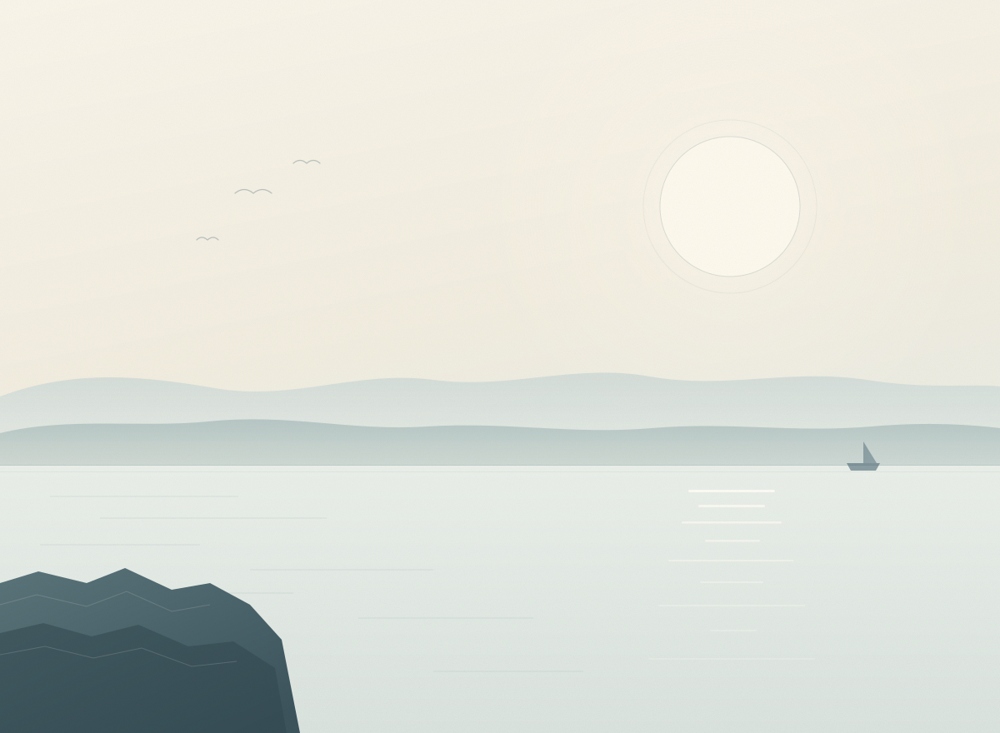

a small site, made slowly
Still Water.
Sentences I've saved. Things I keep meaning to make. One cat that does nothing.
I built this for myself, mostly at night. There is nothing to sign up for, nothing to finish, and no one keeping track of what you click — including me.
- Lines
- 18
- Projects
- 7
- Cats
- 1
- Accounts
- 0

Overview
There are four rooms here
All small. Nothing to complete.
Sentences
Eighteen lines I keep coming back to. The page opens on a random one, like shuffling a deck.
Projects
Seven small things to make. I've finished some of them. The rest are still waiting, and that's fine.
A Small Cat
A cat whose only job is to be petted. It has no other function, and it doesn't want one.
Gathering Light
Forty-five seconds on a night sea: catch falling sparks with a lantern. There is no losing, only collecting.
About me
Three things that are true
Small talk drains me
Thirty people at a party costs me about a day. One person talking about their childhood for two hours gives it back.
I notice moods before words
I can usually tell who in the room is not okay before anyone says it. Useful, and tiring. That is why this site is quiet.
Still an idealist, impractically
I keep believing the world could be kinder. Reality keeps disagreeing. I keep the belief anyway.
Colophon
About this site
No analytics, no backend, nothing collected. I don't know who visits here, and honestly I like that. The illustrations are drawn by hand (in code), the sentences are ones I actually keep, and the machine genuinely does nothing.